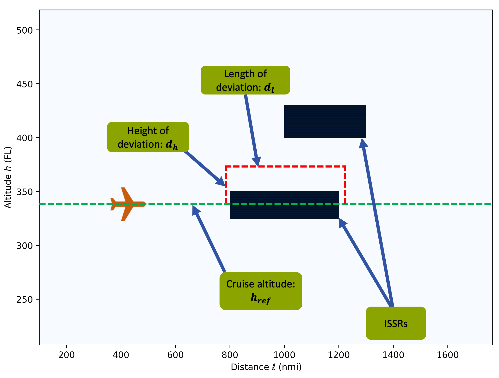
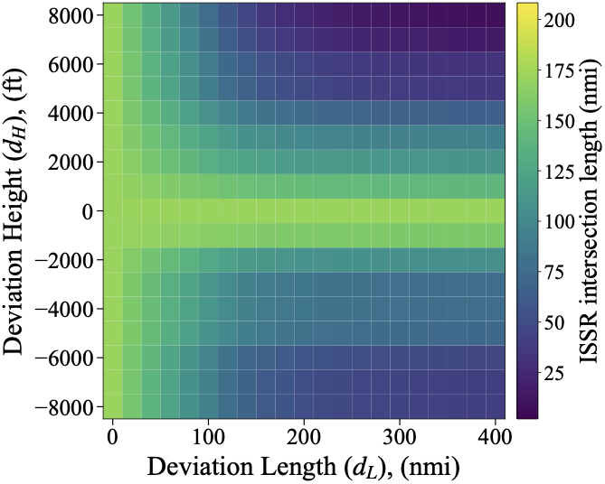

Deviation geometryhref, dH, and dL define the avoidance maneuver.
Contrails · aircraft design · optimization
Designing aircraft that can reduce climate-warming contrails with minimal fuel penalty.


I built a framework that brings contrail avoidance into the aircraft design loop. By combining global weather data, representative flight schedules, and gradient-based aircraft optimization, the project quantifies how aircraft can be designed to avoid persistent contrails while minimizing fuel burn penalties.
What I’ve built so far
Why it matters
Contrail mitigation is usually framed as a flight-routing problem. This project shows that aircraft design itself can expand the feasible trade space, making future aircraft more capable of climate-aware operations.
What’s left to be done